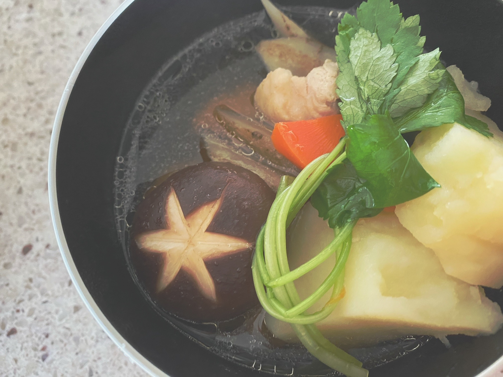

星の王子さま
本番を迎えます。
http://www.shachu.com/e_mouri00/index.html
私自身 客席から朗読劇というものに触れたことはあったものの
自分が舞台に立つのは初めての挑戦になります。
舞台には二人、
シンプルなセットに台本。
言葉だけで伝える感情が
ここまで届くものなんだと
物凄く感動し涙を流したのを覚えています。
誰もが聞いたことがあったり
触れたことのある作品だと思います。
その時の状況によって
受け取り方は変わるかと思いますが
今だからこそ響く言葉やメッセージがたくさん詰まっています。
久しぶりに舞台上に足を踏み入れます。
緊張と、楽しみが ふつふつと湧き上がってきます。
その場の空気感を大切にしつつ
皆様へ想いが届くよう精一杯務めさせていただきます。
１／９（土） 13:00
～ 朴璐美さん
20:00
～ 下野紘さん
お二方とご一緒させて頂きます。
とっても 光栄です。
自分自身の出せるもの全てぶつけて
挑みたいと思っています！
劇場へ直接足を運んでくださる皆様へ
心から感謝申し上げます。
それから直接来られない方も
多くいらっしゃるかと思います。
ご自宅で配信を見ることもできます！
こちらは現在も受付中でございます。
配信終了日の22時30分まで観られますので
お時間合わない方でもぜひ☀︎
こちらから
◎streaming+
https://eplus.jp/e_mouri_st_reading/
◎ローチケ LIVE STREAMING
https://eplus.jp/e_mouri_st_reading/
それから 音楽劇「星の飛行士」
先日配信で観させていただきました！
自宅で見ましたが
画面越しまで熱量も伝わってきて
セットや照明、それから
演者さんの表情が細部まで観られてすごく楽しめました。
こちらも配信で観られます！
生で演じることの素晴らしさをぜひ体感してみてください。
理々杏もとってもかっこよかった！
王子さま、素敵でした❤︎
◎Streaming+
https://eplus.jp/e_mouri_st/
◎ローチケ STREAMING
https://l-tike.com/e-mouri-streaming/
音楽劇、朗読劇、
どちらを観ても楽しめますし
両方観てもより深く世界観に入り込めるかと思います。
とっても楽しみです！
皆様も劇場で、ご自宅で、
ぜひお楽しみくださいませ。

お正月に作ったお雑煮で失礼します。
（じゃがいもの主張強い
好きだからいいんです。）
Original：https://www.nogizaka46.com/s/n46/diary/detail/59681?ima=4935&cd=MEMBER